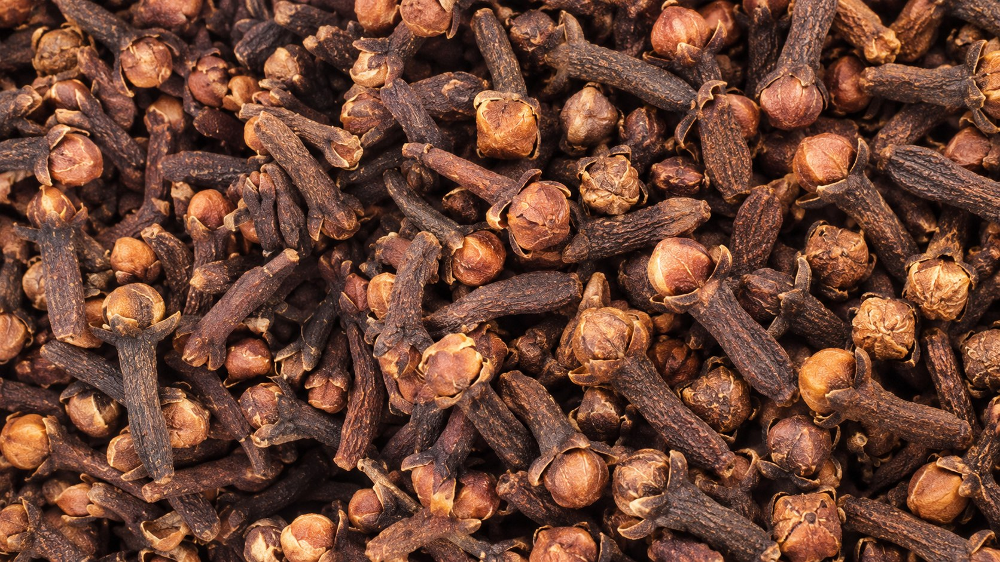
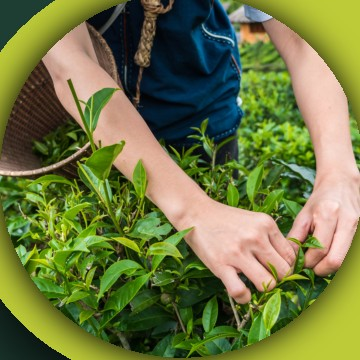
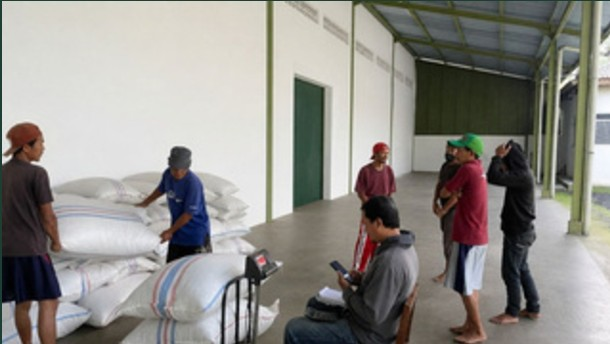
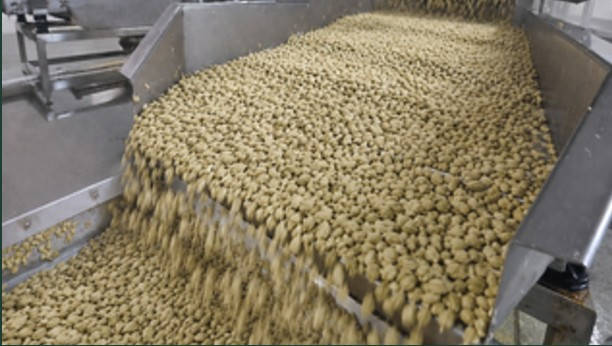
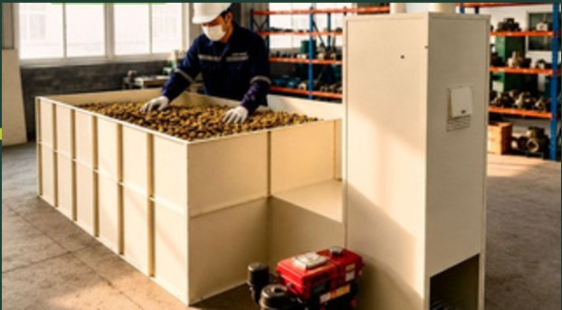
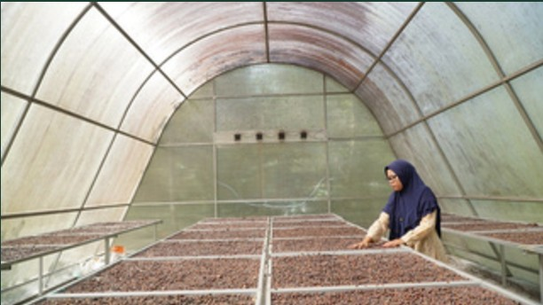
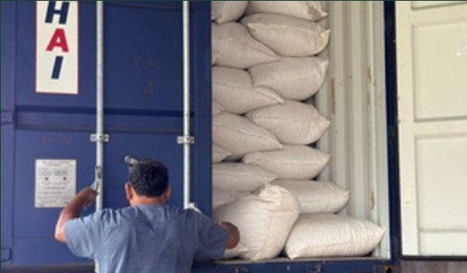

Our vision
To be a trusted trading partner for Indonesian spices, bringing the archipelago’s distinctive products to global markets.
Your Indonesian Spices Trading Partner
Mitra Dagang Rempah Nusantara Anda · 您印尼香料贸易合作伙伴
Established in 1996
CV. Samin Makmur was established in 1996 in Magelang, Central Java, Indonesia, supplying high-quality Indonesian spices and agricultural products to domestic and international markets.
We began as a regional trading company and, through years of steady growth, established an extensive network of farmers, collectors, and processing partners across Indonesia’s key spice-producing regions. Drawing on decades of industry experience, CV. Samin Makmur has developed deep expertise in spice sourcing, processing, quality control, and export management.
Today, CV. Samin Makmur serves customers across Asia, the Middle East, Europe, and other international markets, supplying clove, white cardamom, nutmeg, mace, pepper, cinnamon, galangal, ginger, and other Indonesian spices. With nearly 30 years of industry experience, we remain committed to delivering consistent quality, reliable supply, and lasting partnerships to customers worldwide.
Our export-import range also includes cardamom, cloves, galangal, Java chili, nutmeg, and other spices from the Indonesian archipelago.
CV. SAMIN MAKMUR是一家于1996年在印度尼西亚中爪哇省马格朗成立的公司，向国内和国际市场供应优质印度尼西亚香料及农产品。公司专注于印度尼西亚香料的进出口，包括白豆蔻、丁香、南姜、爪哇辣椒、肉豆蔻及其他香料。
Why partners choose usWe connect the character of Indonesian spices with the needs of international partners—through clear communication and a lasting trading relationship.
To be a trusted trading partner for Indonesian spices, bringing the archipelago’s distinctive products to global markets.
To build reliable partnerships through responsive trade, careful product handling, and export coordination.
Our work is grounded in the diversity of Indonesian spices and the experience built since 1996.
Explore our existing range of Indonesian spices. For availability and specifications, please contact our team.

THE SPICE COLLECTIONWhite Cardamom · 白豆蔻
Cloves · 丁香
Galangal Fruit · 南姜
Javanese Chili / Long Pepper · 爪哇辣椒
Nutmeg, with or without shell · 豆蔻
Black Pepper · 黑胡椒
Ginger · 姜
Other Spices · 其他香料
White Pepper · 白胡椒
Cinnamon · 肉桂
Mace · 肉豆蔻衣
Coffee Beans · 咖啡豆
Cocoa Beans · 可可豆
Vanilla Beans · 香草豆
Star Anise · 八角
Turmeric · 姜黄
Betel Nut · 槟榔果
From Indonesian spice-producing regions to international destinations, our work is built around reliable sourcing, careful quality control, and lasting trade relationships.

Since 1996, Samin Makmur has sourced directly from more than 1,000 farms and key producing regions across Indonesia, supporting reliable supply, competitive pricing, and traceability from origin to destination.
With more than 15,000 m² of processing facilities and over 5,000 m² of warehouse space, we can process and supply 300–500 tons per month. Products undergo sorting, cleaning, grading, and inspection against customer specifications and export standards.
Serving customers in 12 countries, we bring experience in export documentation, logistics coordination, and on-time delivery.
We build lasting business relationships through transparency, consistent quality, responsive communication, and dependable service.
Our product handling follows a coordinated sequence from raw material receiving through final packing and container loading.





Our trade coordination moves with the product and destination requirements discussed with each partner.
Share the spice, specifications and destination you have in mind.
Confirm product details and order requirements with our team.
Coordinate product preparation and export requirements for the order.
Align shipping and required documentation for the destination.
We coordinate the applicable registrations, product checks, and shipment documents for each enquiry. Requirements can vary by product and destination.
Discuss your requirementsDocuments, registrations, and checks are confirmed for the specific product and destination before shipment.
Tell us what you’re looking for. Our team is ready to hear about your product and destination requirements.
Jl. Raya Magelang–Kopeng KM 2, Magelang 56192, Central Java, Indonesia.